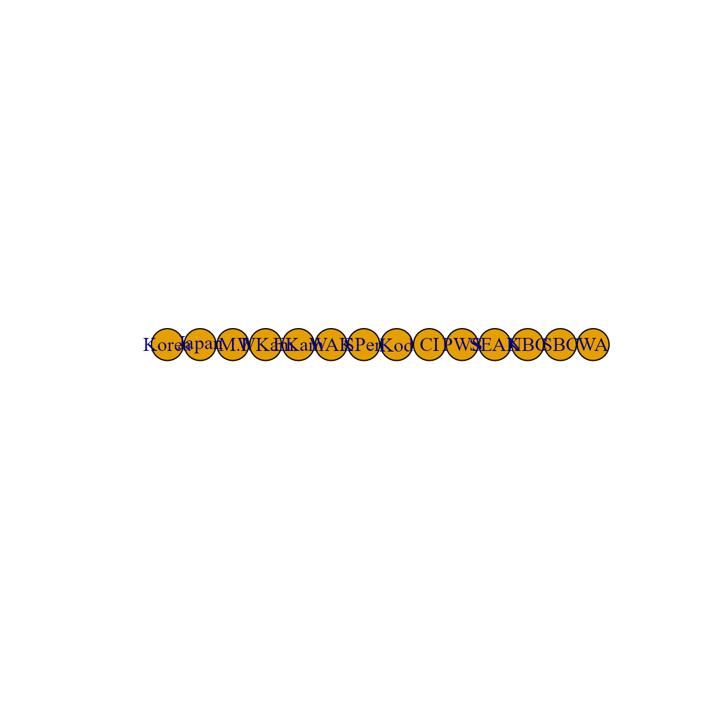
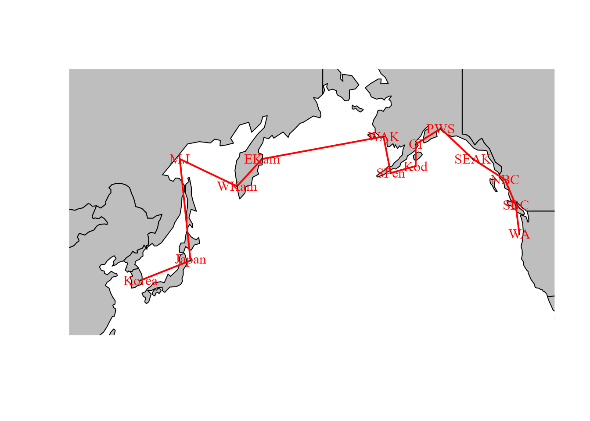
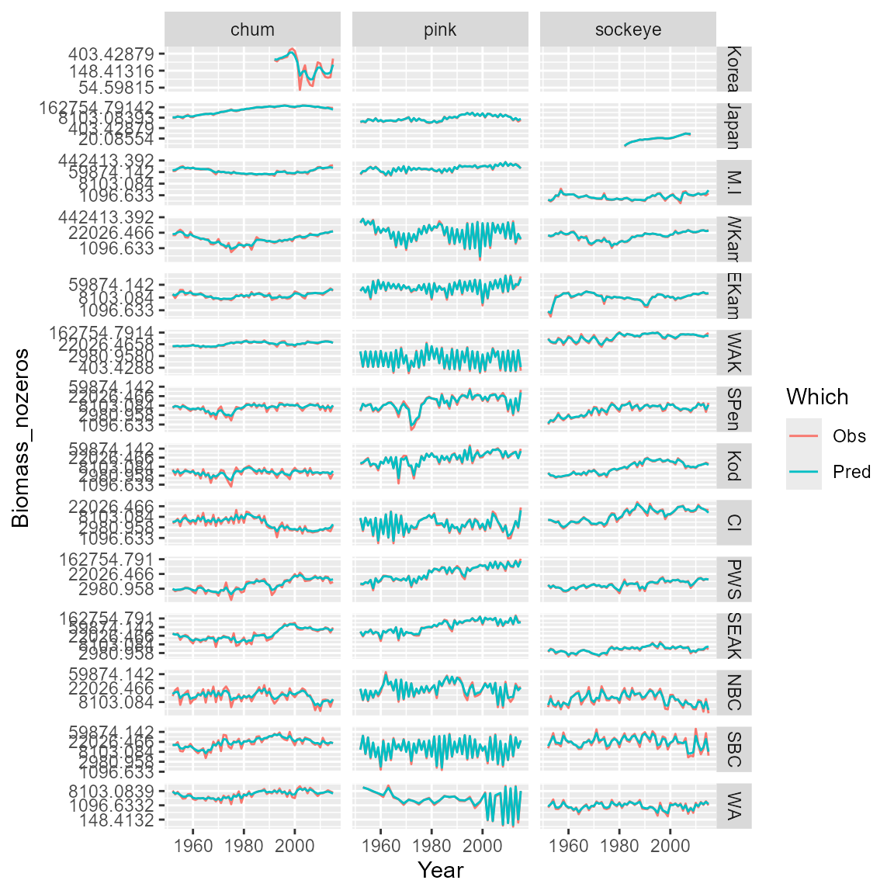

Simultaneous autoregressive process
James T. Thorson
Source:vignettes/web_only/simultaneous_autoregressive_process.Rmd
simultaneous_autoregressive_process.Rmd
library(tinyVAST)
library(igraph)
library(rnaturalearth)
library(sf)
options("tinyVAST.verbose" = FALSE)tinyVAST is an R package for fitting vector
autoregressive spatio-temporal (VAST) models using a minimal and
user-friendly interface. We here show how it can fit a multivariate
second-order autoregressive (AR2) model including spatial correlations
using a simultaneous autoregressive (SAR) process specified using
igraph.
Load and format data
To do so, we first load salmong returns, and remove 0s to allow comparison between Tweedie and lognormal distributions.
Analysis
Independent dynamics among populations
We first explore an AR2 process, with independent variation among regions. This model shows a substantial first-order autocorrelation for sockeye and chum, and substantial second-order autocorrelation for pink salmon. An AR(2) process is stationary if and , and this stationarity criterion suggests that each time-series is close to (but not quite) nonstationary.
# Define graph for SAR process
unconnected_graph = make_empty_graph( nlevels(Data$Region) )
V(unconnected_graph)$name = levels(Data$Region)
plot(unconnected_graph)
# Define SEM for AR2 process
dsem = "
sockeye -> sockeye, -1, lag1_sockeye
sockeye -> sockeye, -2, lag2_sockeye
pink -> pink, -1, lag1_pink
pink -> pink, -2, lag2_pink
chum -> chum, -1, lag1_chum
chum -> chum, -2, lag2_chum
"
# Fit tinyVAST model
mytiny0 = tinyVAST(
formula = Biomass_nozeros ~ 0 + Species + Region,
data = Data,
spacetime_term = dsem,
variable_column = "Species",
time_column = "Year",
space_column = "Region",
distribution_column = "Species",
family = list( "chum" = lognormal(),
"pink" = lognormal(),
"sockeye" = lognormal() ),
spatial_domain = unconnected_graph,
control = tinyVASTcontrol( profile="alpha_j" ) )
# Summarize output
Summary = summary(mytiny0, what="spacetime_term")
knitr::kable( Summary, digits=3)| heads | to | from | parameter | start | lag | Estimate | Std_Error | z_value | p_value |
|---|---|---|---|---|---|---|---|---|---|
| 1 | sockeye | sockeye | 1 | NA | -1 | 0.808 | 0.059 | 13.710 | 0.000 |
| 1 | sockeye | sockeye | 2 | NA | -2 | 0.195 | 0.059 | 3.307 | 0.001 |
| 1 | pink | pink | 3 | NA | -1 | 0.050 | 0.019 | 2.640 | 0.008 |
| 1 | pink | pink | 4 | NA | -2 | 0.882 | 0.022 | 39.933 | 0.000 |
| 1 | chum | chum | 5 | NA | -1 | 0.675 | 0.103 | 6.582 | 0.000 |
| 1 | chum | chum | 6 | NA | -2 | 0.292 | 0.100 | 2.939 | 0.003 |
| 2 | pink | pink | 7 | NA | 0 | 0.648 | 0.039 | 16.766 | 0.000 |
| 2 | chum | chum | 8 | NA | 0 | 0.294 | 0.035 | 8.349 | 0.000 |
| 2 | sockeye | sockeye | 9 | NA | 0 | 0.421 | 0.036 | 11.622 | 0.000 |
Spatially correlated dynamics among populations
We also explore an SAR process for adjacency among regions
# Define graph for SAR process
adjacency_graph = make_graph( ~ Korea - Japan - M.I - WKam - EKam -
WAK - SPen - Kod - CI - PWS -
SEAK - NBC - SBC - WA )We can plot this adjacency on a map to emphasize that it is a simple way to encode information about spatial proximity:
#maps = ne_countries( country = c("united states of america","russia","canada","south korea","north korea","japan") )
maps = ne_countries( continent = c("north america","asia","europe") )
maps = st_combine( maps )
maps = st_transform( maps, crs=st_crs(3832) )
#maps = st_crop( maps, xmin = -5*1e5, xmax = 12*1e5,
# ymin = 0 * 1e6, ymax=10 * 1e6 )
# Format inputs
loc_xy = cbind(
x = c(129,143,140,156,163,-163,-161,-154,-154,-147,-138,-129,-126,-125),
y = c(36,40,57,53,57,60,55,56,59,61,57,54,50,45)
)
loc_xy = sf_project( loc_xy, from=st_crs(4326), to=st_crs(3832) )
# Plot
xlim = c(-4,10) * 1e6
ylim = c(3,10) * 1e6
plot( maps,
xlim = xlim,
ylim = ylim,
col = "grey",
asp = FALSE,
add = FALSE )
plot( adjacency_graph,
layout = loc_xy,
add = TRUE,
rescale = FALSE,
vertex.label.color = "red",
xlim = xlim,
ylim = ylim,
edge.width = 2,
edge.color = "red" )
We can then pass this adjacency graph to tinyVAST during
fitting:
# Fit tinyVAST model
mytiny = tinyVAST(
formula = Biomass_nozeros ~ 0 + Species + Region,
data = Data,
spacetime_term = dsem,
variable_column = "Species",
time_column = "Year",
space_column = "Region",
distribution_column = "Species",
family = list( "chum" = lognormal(),
"pink" = lognormal(),
"sockeye" = lognormal() ),
spatial_domain = adjacency_graph,
control = tinyVASTcontrol( profile="alpha_j" ) )
# Summarize output
Summary = summary(mytiny, what="spacetime_term")
knitr::kable( Summary, digits=3)| heads | to | from | parameter | start | lag | Estimate | Std_Error | z_value | p_value |
|---|---|---|---|---|---|---|---|---|---|
| 1 | sockeye | sockeye | 1 | NA | -1 | 1.505 | 0.081 | 18.529 | 0.000 |
| 1 | sockeye | sockeye | 2 | NA | -2 | -0.502 | 0.082 | -6.113 | 0.000 |
| 1 | pink | pink | 3 | NA | -1 | 0.010 | 0.009 | 1.093 | 0.274 |
| 1 | pink | pink | 4 | NA | -2 | 0.978 | 0.010 | 100.558 | 0.000 |
| 1 | chum | chum | 5 | NA | -1 | 1.685 | 0.113 | 14.978 | 0.000 |
| 1 | chum | chum | 6 | NA | -2 | -0.688 | 0.113 | -6.108 | 0.000 |
| 2 | pink | pink | 7 | NA | 0 | 0.575 | 0.041 | 14.158 | 0.000 |
| 2 | chum | chum | 8 | NA | 0 | 0.077 | 0.023 | 3.421 | 0.001 |
| 2 | sockeye | sockeye | 9 | NA | 0 | 0.232 | 0.029 | 7.977 | 0.000 |
Model selection and visualization
We can use AIC to compare these two models. This comparison suggests that spatial adjancency is not a parsimonious way to describe correlations among time-series.
# AIC for unconnected time-series
AIC(mytiny0)
#> [1] 49086.47
# AIC for SAR spatial variation
AIC(mytiny)
#> [1] 49755.91Finally, we can plot observations and predictions for the selected model
# Compile long-form dataframe of observations and predictions
Resid = rbind( cbind(Data[,c('Species','Year','Region','Biomass_nozeros')], "Which"="Obs"),
cbind(Data[,c('Species','Year','Region')], "Biomass_nozeros"=predict(mytiny0,Data), "Which"="Pred") )
# plot using ggplot
library(ggplot2)
ggplot( data=Resid, aes(x=Year, y=Biomass_nozeros, col=Which) ) + # , group=yhat.id
geom_line() +
facet_grid( rows=vars(Region), cols=vars(Species), scales="free" ) +
scale_y_continuous(trans='log') #
Runtime for this vignette: 8.76 secs